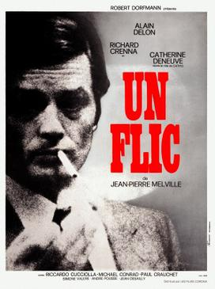

Jean-Pierre Melville
1972
98 minutes
Crime films and police films hit a little bit different once you've had a few people pull a gun or knife on you. But that's not something you're going to be reading about or thinking very hard about in these pages.
This is a Melville film. It occurs to you that you can barely remember the actual plot of most Melville films. You can only remember how it feels to watch a Melville film. This one is about a cop, thus the name. Alain Delon is in it, being moody and pretty and enviable. Your Russian ex-girlfriend would still get in a tizzy over watching his films, especially on the big screen. She would text her giggling Russophone girlfriends about the fact she's watching a film with Ален Делон, and they'd respond with similar reactions that you could understand even with your rusty rudimentary Russian. Apparently he was quite a cultural hit in the former Soviet states, with a name and face and stoic charm that could easily permeate even the most Iron of Curtains.
Whenever Alain Delon's name would come up, which was shockingly often since he wasn't much on your radar before your Russian ex-girlfriend was part of your life, she would sing for you the chorus of one of her favorite Russian rock songs that was popular when she was a girl. Apparently (and not surprisingly) there was quite a problem with alcoholism in Russia back in those days. This led to several periods of prohibition and/or shortages that would make affordable alcohol difficult to obtain. Bad alcoholics would often fall back on drinking eau de cologne, which would often contain ninety percent alcohol.
You are reminded of one of her favorite Russian jokes, about a wino who goes to a corner store during one of these hard times and asks the owner to sell him a bottle of cologne. The shopkeeper recognizes him as one of the local drunks and refuses to fetch a bottle to sell to him, since he knows he is going to drink it. The wino swears to the shop-owner that yes, he used to be a drunk, but since alcohol became hard to come by he has cleaned up his act and gotten a job and is now a respectable man. And since cleaning up, he even has a date to prepare for that very night, thus the need for the cologne. The shopkeeper skeptically fetches a small bottle of cheap cologne for the man, who takes it and frowns and hands it back, asking the shopkeeper if he has any that has been refrigerated...
Anyway, the song your ex would always sing was a somewhat darkly funny song by a Russian rock band called Nautilus Pompilius, with a title that translates roughly to "A Glance from the Screen". It's somewhat like a Russian version of "Life on Mars", but about a sad girl with an alcoholic father who finds escapism through watching movies. The chorus has lyrics about "Alain Delon speaks French/Alain Delon drinks double bourbon, Alain Delon doesn't drink eau de cologne". Listening to the song is like banging Soviet zeitgeist into your veins in four minutes and twenty-six seconds.
Time to choose something different: